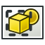

Raytracing tutorial/fr
Atelier Raytracing
L'atelier Raytracing n'est plus inclus depuis la version 0.20. Pour les versions en cours de FreeCAD, utilisez l'atelier Render externe, qui peut être installé via le gestionnaire d'extensions. Ce tutoriel est conservé à l'intention des utilisateurs de FreeCAD 0.16 à 0.20 et sert de référence pour les anciens flux de travail.
| Thème |
|---|
| Raytracing |
| Niveau |
| Débutant |
| Temps d'exécution estimé |
| 10 minutes + temps de rendu |
| Auteurs |
| Drei |
| Version de FreeCAD |
| 0.16 et plus |
| Fichiers exemples |
| Voir aussi |
| None |
Introduction
Ce tutoriel est destiné à présenter au lecteur le fonctionnement de base de l'atelier Raytracing, ainsi que la plupart des outils disponibles pour créer une image rendue. Remarquez que l'atelier Raytracing est progressivement écarté au profit du nouvel atelier Render, disponible via le gestionnaire des extensions.

Conditions
- FreeCAD la version 0.16 ou au-dessus.
- POV-Ray et/ou LuxRender est installé sur le système.
- Dans le cas de POV-Ray, il ne suffit pas d'avoir l'exécutable binaire en place, cela demande aussi l'installation des fichiers de support. Dans Ubuntu, ceux-ci sont fournis par le paquet Recommends-flagged povray-includes. Des problèmes potentiels ont également été constatés lors d'installations de Linux nécessitant la création manuelle de fichiers de configuration locaux dans le dossier personnel de l'utilisateur, comme nous l'avons vu ici.
- Dans le cas de POV-Ray, l'installation de macro de psicofil est recommandée.
- Le lecteur a les connaissances de base pour utiliser les ateliers Part et PartDesign.
Procédure
Modélisation
Dans cet exemple, un cube est utilisé pour l'étude, mais tous les modèles créés avec les ateliers Part ou PartDesign peuvent être utilisés.
- Créez un nouveau document
- Activez l'Atelier Part Workbench
- Créez un Cube. Vous pouvez changer ses propriétés .
Maintenant nous avons un modèle pour travailler.
Préparer le rendu
- Basculez l'atelier de Raytracing.
- Changez votre vue à Perspective allez à Vue et choisissez Perspective
- Définissez l'emplacement du moteur de rendu. Allez au menu Éditer et choisir Préférences
- Cliquez sur Raytracing et mettre l'emplacement sur l'adresse de l’exécutable.
- Définissez la taille de l'image rendue. Allez sur Éditer et choisir Préférences. Cliquez sur Raytracing et réglez l'image à la taille désirée
POV-Ray
- Choisir New PovRay project. Dans le menu déroulant, choisir RadiosityNormal.
{kind=link}
LuxRender
- Choisir New LuxRender projetc. Dans le menu déroulant, choisir LuxClassic.
{kind=link}
Réglage de la position de la caméra
- Placer la vue 3D à l'emplacement désiré et à la distance du mode Dans ce cas nous utiliserons Axonométrique view
- Choisir le dossier de Project folder de Tree view
- Sélectioner Reset camera
{kind=link}
Importer le modèle
- Choisir le modèle pour rendu.
- Choisir

Insert
{kind=link}
Lancer le moteur de rendu
- Choisir Render.
- Entrer le chemin ou l'image sera stockée.
- Attendre le rendu pour finir. Ceci peut prendre quelque temps.
{kind=link}
Voir le résultat
FreeCAD ouvrira immédiatement l'image après que le rendu soit fini.
Nous en avons maintenant terminé avec le processus de base pour l'atelier Raytracing.
- Démarrer avec FreeCAD
- Installation : Téléchargements, Windows, Linux, Mac, Logiciels supplémentaires, Docker, AppImage, Ubuntu Snap
- Bases : À propos de FreeCAD, Interface, Navigation par la souris, Méthodes de sélection, Objet name, Préférences, Ateliers, Structure du document, Propriétés, Contribuer à FreeCAD, Faire un don
- Aide : Tutoriels, Tutoriels vidéo
- Ateliers : Std Base, Assembly, BIM, CAM, Draft, FEM, Inspection, Material, Mesh, OpenSCAD, Part, PartDesign, Points, Reverse Engineering, Robot, Sketcher, Spreadsheet, Surface, TechDraw, Test